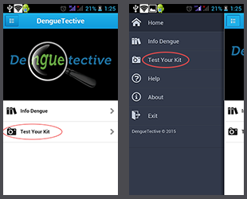
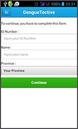
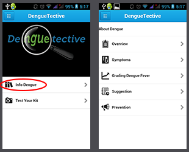

This application is designed by iGEM UB-Indonesia for supporting the interpretation of detection results for dengue fever from diagnostic kit. Everyone can find more about dengue fever with educative and testing features. This is the steps to test your kit :
1. Make sure that you have De(ngue)tective kit
2. Follow the kit instruction
3. To interpret detection result from kit, choose test menu :

firstly, you have to fill your personal data and continue capturing your kit.

4. Wait a few moment and you will get the result
5. In Addition, to know more about dengue fever, choose Info Dengue

Notice : this app still beta version, so the accurate result still less.
This application is designed by iGEM UB-Indonesia for supporting the interpretation of detection results for dengue fever from diagnostic kit. Everyone can find more about dengue fever with educative and testing features. This application is aimed to help reader to know early about dengue fever, starting from its overview, symptoms until suggestion toward dengue-suspicion finding, thus patient can get early treatment before it is too late.
Dengue fever is a disease with sudden high fever because dengue virus infection brought by mosquito as vector. Dengue fever could fall into the dangerous event, which going to be dengue hemmorhagic fever, with warning sign like shortness of breath, vomiting, delirium, and so on.
Symptoms
• Sudden high fever
• Severe headaches
• Pain behind the eyes
• Severe joint and muscle pain
• Fatigue
• Nausea and Vomiting
• Skin rash, which appears two to five days after the onset of fever
• Mild bleeding (such a nose bleed, bleeding gums, or easy bruising)
Warning Signs to be Dengue Hemmorhagic Fever
The initial phase of dengue hemorrhagic fever is similar to that of dengue fever and other febrile viral illnesses. Usually after 3 days, which is fever would go down, signs of plasma leakage appear, along with the development of hemorrhagic symptoms. The symptoms such as:
• Bleeding from sites of trauma
• Abdominal Pain
• Seizure
• Decrease of consciousness
• Restlessness
• Circulatory failure
If there are dengue fever symptoms above, first things to remember is BE AWARE of warning signs. Early detection of symptoms and warning signs would imply to the prognosis of patient in future. Usually at fever day 1-3 the body temperature will raise high, and go down at day 4-6 which seems to be cured, but actually it turns to critical phase which the patient tends to fall into critical event which shows any warning signs. If the fever go down after antipiretic drugs given, but go high again after several times at day 1-3, it highly suspected as dengue fever, clinically. If a suspicion toward dengue is high or there is any warning sign, please go directly to hospital in order to get proper medication and observation toward dehydration and circulatory failure.
Prevention
Those who have experienced prior dengue fever, or even the neighbor approximately 300 m after the infected house, are important to avoid mosquito bites, including the use of appropriate mosquito repellants and peridomestic vector control by sleeping-net. The travelers are also important to do so, when traveling to dengue-endemic areas.